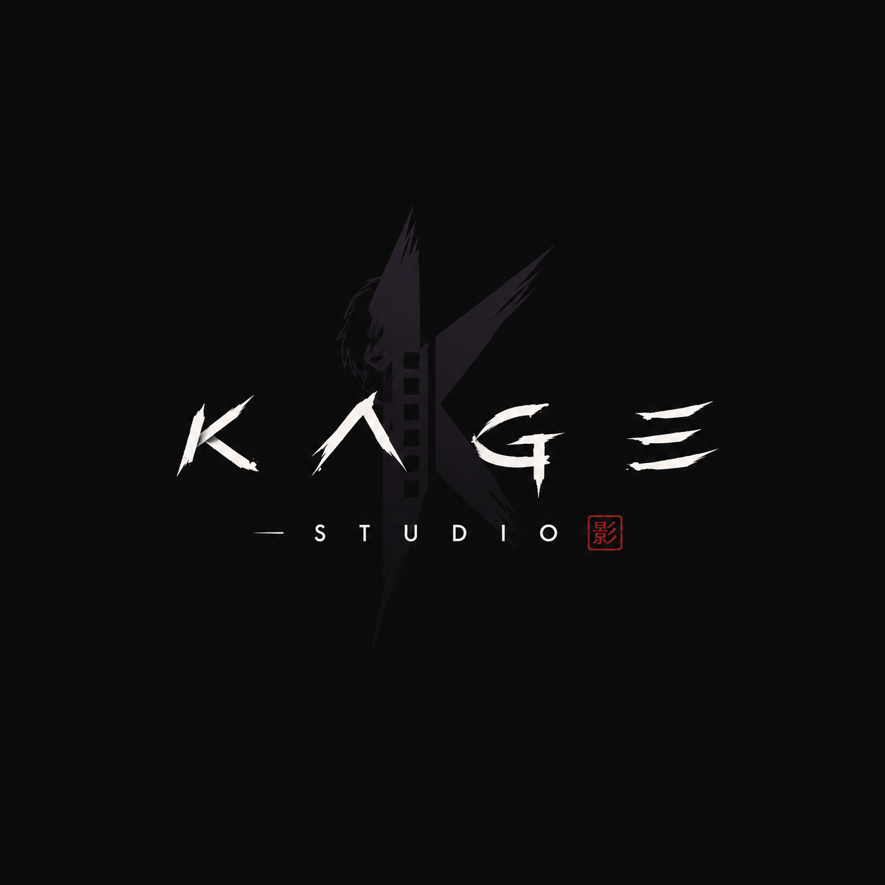
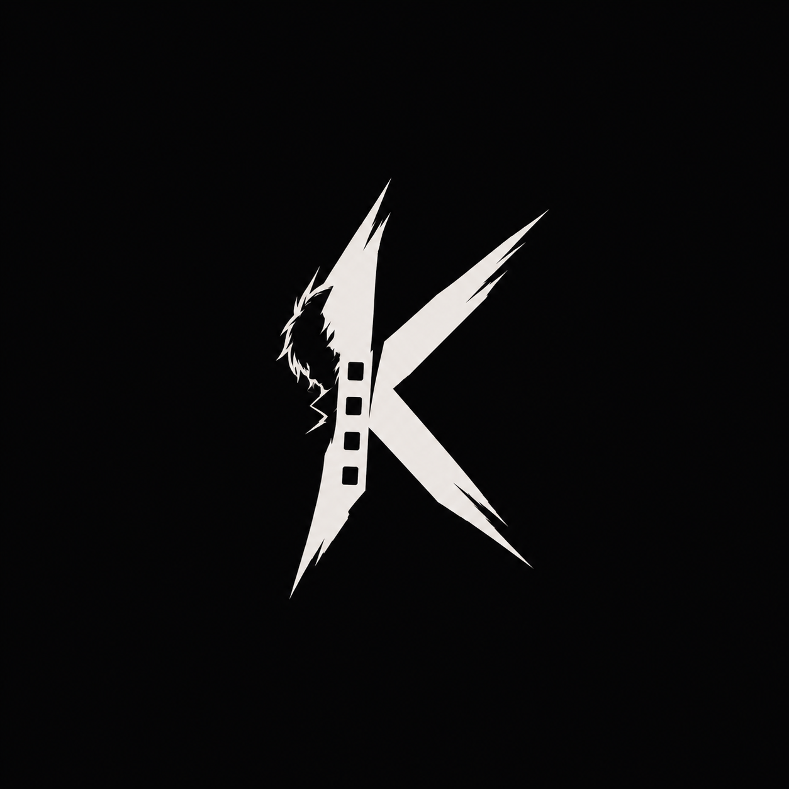

Renders your selection from After Effects, applies the enabled steps, and drops the result onto the timeline where the clip is.
Select two or more keyframes in your After Effects timeline, shape the curve (drag the dots), then Apply — just like the Flow plugin.
Fetches ffmpeg, Real-ESRGAN and RIFE 4.6 from their official sources into ~/KageStudio/tools and fills the paths below. Or set them manually.
~/KageStudio/tools
After Effects links to imported files — keep them on disk while a project uses them.
After Effects will close, update, and reopen automatically. Make sure your project is saved.